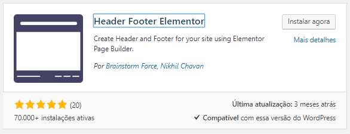
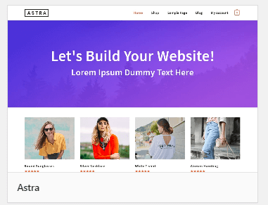

Page Builder no WordPress - Aula 4 - Cabeçalho e Rodapé
Na continuação do curso sobre o Elementor, um dos plugins mais conhecidos de Page Builder para a plataforma WordPress, mostramos como colocar cabeçalho e rodapé no nosso site com ajuda de um tema compatível.
Cabeçalho e rodapé no Elementor
Neste post damos continuidade ao nosso mini curso de page builder usando WordPress. Dessa forma, vamos mostrar nas próximas aulas como construir um página de vendas a partir do zero. Mas o primeiro passo é colocar o cabeçalho e o rodapé no Elementor, para serem usados em todo site. Mostramos um plugin e um tema que permitem a definição de um modelo, independente do tipo de página usado.
Não se esqueçam, no entanto, que é preciso ver o conteúdo anterior deste mini curso, acessível através deste link.
O plugin
Considerando que já temos o Elementor instalado no site, é necessário um novo plugin. Buscando pela palavra chave “Elementor” vamos achar no diretório de plugins do WordPress diversas opções. O que vamos usar neste exemplo é o “Header Footer Elementor”. De acordo com o que vimos outras vezes, analisamos a avaliação, a quantidade de downloads e a última atualização. Dessa forma, como todos os pontos estão ok, podemos instalar e ativar o plugin.

O tema
Assim que instalamos o plugin e tentamos configurá-lo, percebemos que o tema padrão do WordPress não é compatível com ele. Precisamos usar um dos temas sugeridos pelo próprio “Header Footer Elementor”. Neste exemplo vamos usar o tema “Astra”. Basta procurar por esta palavra chave, instalar e ativar o tema.

Criação do cabeçalho e do rodapé
Com o plugin e o tema instalados, basta começar a criar o cabeçalho e o rodapé usando o próprio Elementor. Para isso criamos o passo a passo abaixo, com exemplos bem interessantes. Primeiramente usamos uma imagem de logo e os ícones das redes sociais no cabeçalho. Em seguida, criamos o rodapé, também com as redes sociais e com informações de copyright.
Seção de cabeçalho
-
Incluir nova seção com 2 colunas
-
Na coluna da esquerda colocar o elemento “Imagem”.
-
Ao editar as propriedades da imagem, definir “Tamanho da imagem” como “Medium”.
-
Na coluna da direita colocar o elemento “Ícones sociais”.
-
Na aba “Conteúdo” é possível redefinir os ícones e os links das redes sociais.
-
Ainda editando os ícones sociais, na aba “Avançado”, configurar a propriedade “Padding”, para dar espaço na parte superior.
Seção rodapé
-
Incluir nova seção com 1 coluna apenas
-
Editar a seção e escolher a guia “Estilo”, definindo o “Tipo de fundo” como clássico e definindo a cor como #2e2e2e.
-
Ainda editando a seção, escoher a guia “Layout” e definir “Largura de conteúdo” como “Largura total”.
-
Adicionar dois elementos na coluna da seção: “Ícones sociais” e “Texto”.
-
No elemento “Texto” colocar as informações de copyright do site.
-
Editar o elemento “Ícones sociais” e definir na guia “Estilo” o ícone com “Cor” com valor “Personalizar”. Para a cor primária definir #969696 e cor secundária como branco. Ainda editando o estilo, alternar as cores definidas anteriormente, dessa ver para o hover dos ícones.
No vídeo abaixo detalhamos todas as informações apresentadas neste post: